Overview
To create these forms, ProcessMaker has created an interface that allows users to define the form fields, the variables are related to these fields, the behavior of the controls, etc.
Designers have an extra section in the web edition of ProcessMaker Enterprise, where additional controls supported by the mobile application are rendered. These additional controls allow the user to submit data from their phone that is not possible to submit in the web edition, such as images, audio, and video.
When running cases in both editions, if using these controls, the application has the ability to input data into the controls and the web edition only has the ability to view them. Remember that the application uses webkit tools exclusively for Android and iOS to display the form fields, thus forms are not rendered on the mobile app the same way as in the web edition (in the preview of the designer or when running cases).
This page lists the web controls supported and unsupported by the mobile application, as well as the controls used exclusively by ProcessMaker. This page also briefly describes how to use each one of the mobile controls.
Supported DynaForm Controls
The following elements are supported by the BPMN Designer and the ProcessMaker engine for execution when running cases on the mobile app:
- Text
- TextArea
- Dropdown
- Checkbox
- Checkgroup
- Radio
- DateTime
- Title
- Subtitle
- Suggest
- Comments
- Submit
- SubForms
- Image
- Button
- Panel
- Hidden
- Link
- File
- Multiple File
Files Icons
ProcessMaker Mobile has a different icon for each different type of file to help the user navigate between files.
| Android | IOS |
|---|---|
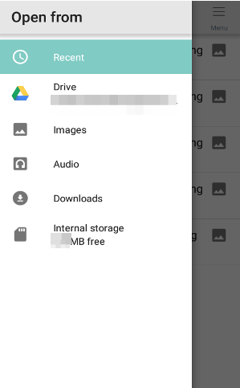 |
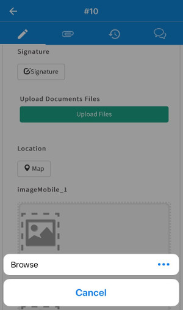 |
Mobile Controls
The following mobile controls can be created and used:
How to Use Mobile Controls
To use mobile controls, first create a Dynaform in the ProcessMaker Enterprise edition (the mobile controls are NOT available in the community edition). This Dynaform will contain all the available controls for the mobile application to test and observe their behavior. Create a new Dynaform with the name "Mobile Fields Example", add a description if needed, and then click on the Save and Open button.

When the Dynaform designer is opened, it is empty to start adding the controls of the form. To view the mobile controls, go to the left panel and click on the Mobile Controls tab under the Web Controls section. Add the six available mobile controls to the Dynaform: Geomap, QR Code, Signature, Image, Audio and Video. Change the Label property of each control to help the user filling out the Dynaform understand how to fill in each field. Save this Dynaform and exit. Now this Dynaform must be added as a step in one of the tasks. Back in the process map, go to the first task and right click on it to show its context menu. Select Steps and add the Dynaform "Mobile Fields Example", that way the Dynaform will run first.
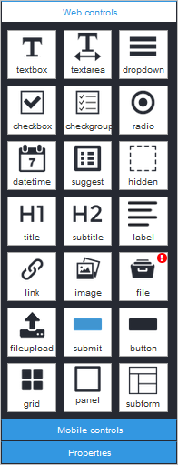

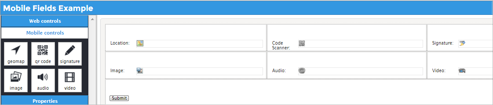
Now that the Dynaform has been properly created, a mobile phone can be used to try the controls in the Dynaform. Look for the ProcessMaker icon on the main screen of your cellphone, tap on it to open the mobile application and log on.
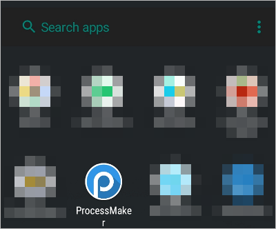 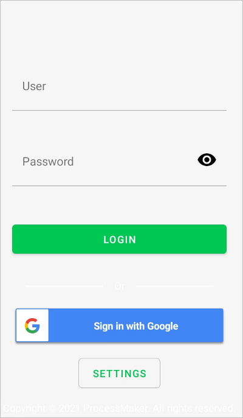Inside the ProcessMaker app, go to the Case List, tap on Inbox and look for the Process used as an example, "Creation of Payment Order" and tap on it.
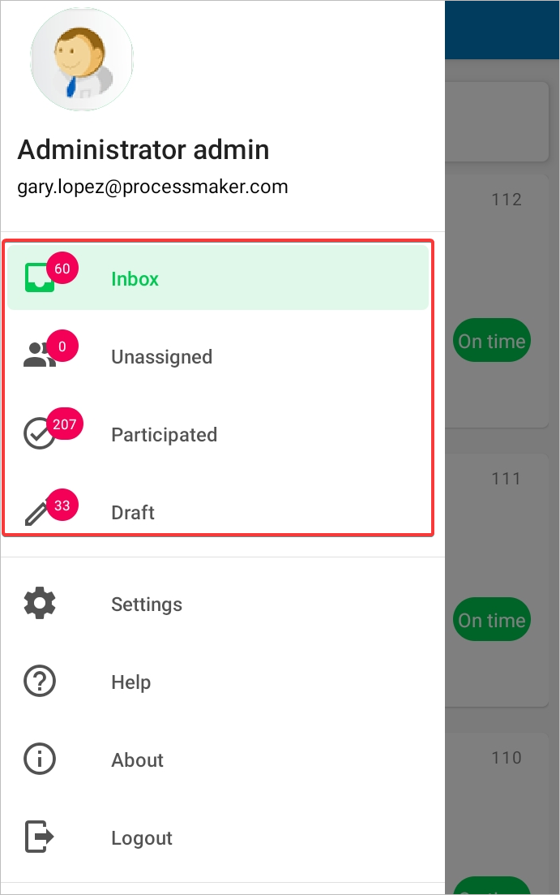 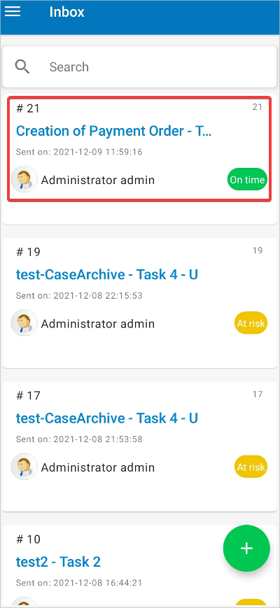The Dynaform was assigned to the second task, "#21", which will be rendered with all of the fields created previously on the device. See the image below.
 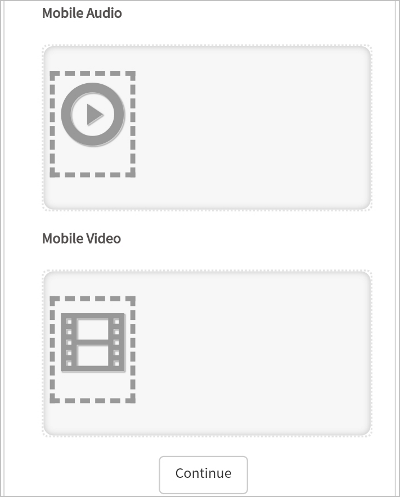
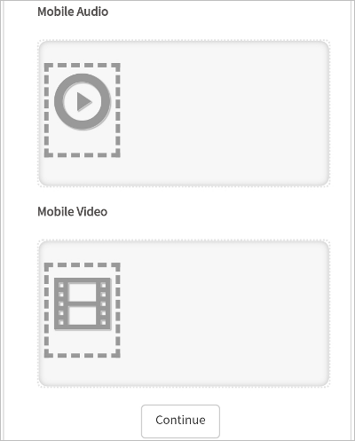
Let's start testing the functionality of the controls. The first control is Geomap, tap on the Map button and the location of the user will be displayed. The field will be set automatically with your location. A small checkbox in the upper right side of the map can be tapped on to finish the Location field. Back in the form, the Location field will show a small map with the user's location.

The second mobile control field is QR Code. In this example, a QR code leading to the ProcessMaker wiki was created in the Dynaform field.
Tap on the Scanner Code button, and the camera of the cellphone will automatically open to search for a QR code to scan. Scan the QR code and the fields will immediately recognize what type of QR code it is. If it is a link to a web site, it will be placed under the "Scanner Code" title.


Note: When scanning a QR Code make sure the code that is being scanned is legible. There can be cases where the opacity and the blurriness of a QR Code can interrupt the process of capturing said code.
The third mobile control in the Dynaform is Signature. Once tapped, a blank space is available where the user can write their signature with their finger. Then, the user can tap one of three buttons: Cancel to go back to the form, Clear to erase the signature and start again and Save to store the signature that will be placed in the form.
 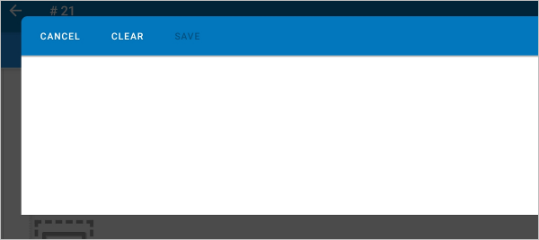
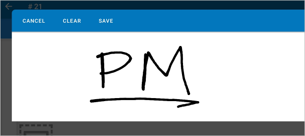
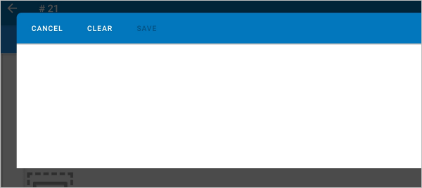
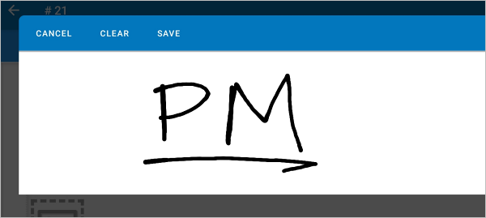
This is what the Signature control looks like after entering the signature in the mobile application.

The next mobile control is Image, where the user can either choose a picture from the gallery or take a new one with their cellphone camera. This picture can be saved or discarded by the user to take a new picture. Once saved, the picture will be shown in the Image field and more pictures can be added.
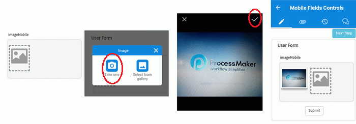
The fifth mobile control in the form is Audio which allows the user to record sound. The user can either select an audio file from the gallery or record a new one. If new audio is recorded, the buttons Record, Stop, Play and Save will appear sequentially. Record audio and then play it until your are sure that is the audio wanted, then save the recorded audio that will be shown in the "Audio" field.


Save the audio, the audio displays in the form.
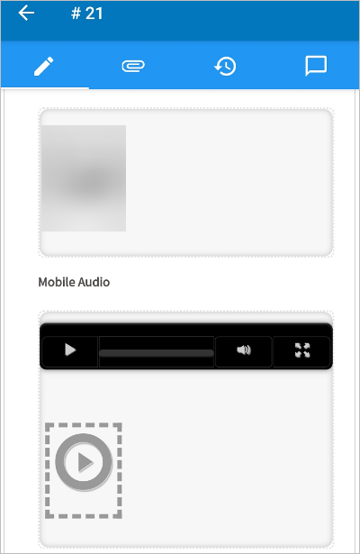
Finally, the last mobile control in the form is Video. Choose a video from the gallery or take a new video. When taking a new video, the options to discard or save the video will appear. If the video is discarded, then a new video can be taken; if saved, then the video is kept in the "Video" field.
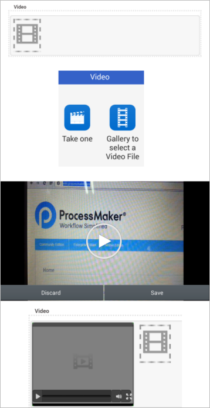
Note: Take into consideration that the mobile app is always getting better and we are always working on delivering a better experience for the user. This being said, sometimes the Video control may crash when it is being saved. When/if the application crashes, report it and restart the application, that way we will be notified if this happens.
ProcessMaker Web Edition and ProcessMaker Mobile are designed to work together, specially when using mobile controls on a Dynaform. The mobile app controls (Geomap, QR Code, Signature, Image, Audio and Video) only input data through the mobile application, and the web edition only renders them in view mode. Take into account that these controls are disabled when a Dynaform that contains them is rendered in the web edition if no data has been input using the application.
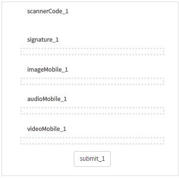
But when the same case is started on a smartphone, then all controls will be available to be used.
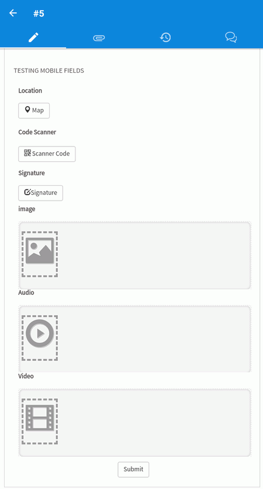
Take care not to add controls that are not supported by the mobile application. When rendering them using the application they not only will not be rendered, but the application may crash as well.
When a case is started with ProcessMaker Mobile, it can be continued in the web edition of ProcessMaker. For example, start a case from the mobile app.
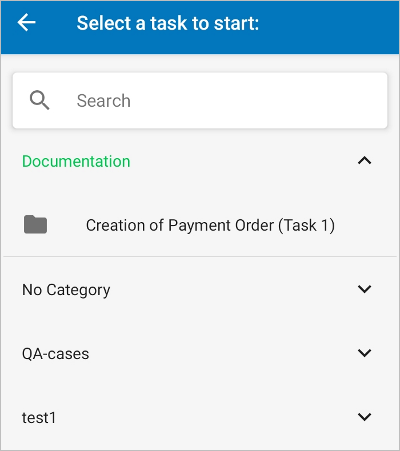
The Dynaform fields must be filled in, notice that web controls and mobile controls are being used in one Dynaform.
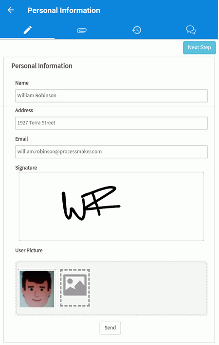
Now, go the ProcessMaker web edition of ProcessMaker and open Home > Inbox and double click on Mobile Controls.
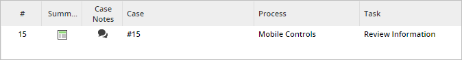
Observe that the information saved (image and signature) from the mobile application is intact.
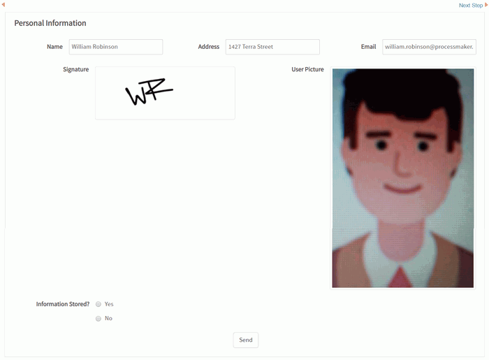
The Process can continue normally with the web edition.

And the process ends normally. Therefore, the mobile application can start a case, and that same case can be worked on in ProcessMaker Web Edition.